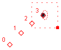
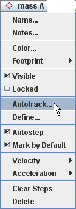
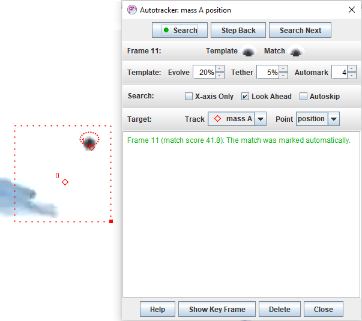
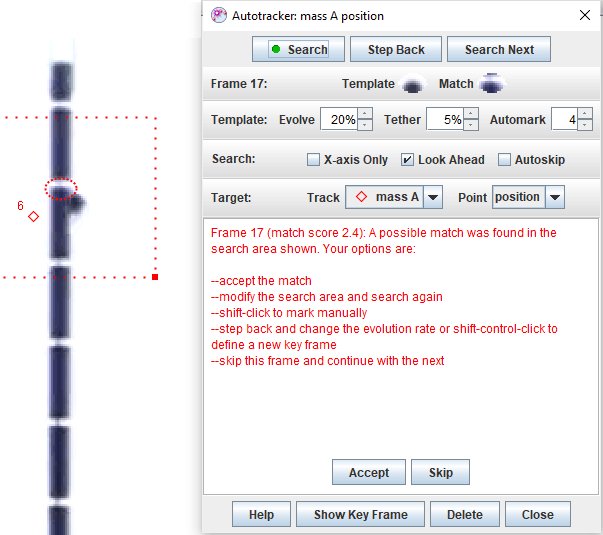

Avtomatsko sledenje

Če ima opazovani predmet v vseh video sličicah dovolj konsistentno obliko, velikost, barvo in usmeritev, ji lahko avtomatsko sledimo s pomočjo avtomatskega sledilca. Tako ni potrebno ročno označevanje z miško v vseh sličicah. Proces sledenja je zato hitrejši in tvori bolj konsistentne podatke. Opomba: avtomatski sledilec je na voljo le za sledi točkovnih mas.
Namig: Odličen način zato, da dobimo video posnetke, primerne za avtomatsko sledenje, je, da opazovane predmete označimo z barvnimi okroglimi etiketami (bel obroč zs pobarvano sredino je še boljši). Če uporabimo različne barve, lahko avtomatsko sledimo več predmetom.
1. Kako deluje avtomatski sledilec
Avtomatski sledilec deluje tako, da zajamemo vzorčno sliko opazovanega predmeta in v vseh sličicah iščemo najboljše ujemanje s to sličico. Najboljše ujemanje je tisto, ki ima najvišjo oceno ujemanja, to je število, ki je obratno sorazmerno vsoti kvadratov RGB razlik med vzorčno sliko in piksli, ki naj bi se ujemali.
Vzorec se sčasoma lahko razvija--torej prilagaja spremembam oblike in barve. Hitrejši razvoj lahko sledi hitrejšim spremembam, vendar je lahko v daljše, časovnem obdobju manj natančen.
Ko najdemo najboljše ujemanje, ga avtomatski sledilec uporablja skupaj s sosednjimi ocenami ujemanja pri odločanju položaja interpoliranega najboljšega ujemanja na nivoju pod-pikslovin temu ustreznega položaja tarče, pri katerem označuje korak. Če želimo, je lahko tarča odmaknjena od najboljšega ujemanja.
Če imamo dobro ujemanje z visoko oceno ujemanja, avtomatski sledilec avtomatsko označi korak na položaju tarče. Če pa je ujemanje slabo (nizka ocena ujemanja), jo uporabnik pozvan, da ujemanje preveri in ga sprejme ali prekrije. Prag sprejemljivosti za avtomatsko označevanje lahko nastavimo.
Avtomatski sledilec omejuje svoje iskanje ujemanja v vsaki sličici na pravokotno področje iskanja, ki ga mi definiramo. Ko sta označena vsaj dva koraka, uporablja program hitrost in pospešek točkovne mase za napovedovanje lokacije naslednjih ujemanj in ustrezno premika iskalno področje. Kadarkoli pa lahko iskalno področje premaknemo ali povečamo.
Za 1D avtomatsko sledenje lahko iskanje omejimo na os x. Za iskanje vzdolž poljubne črte lahko nastavimo izhodišče in naklon osi x.
Ko avtomatski sledilec zaključi proces označevanja, lahko korake poljubno spreminjamo. Z drugimi besedami nam avtomatski sledilec pomaga označevati korake, vendar ne omejuje našega nadzora nad njimi.
2. Priprava na uporabo avtomatskega sledilca
Pred uporabo avtomatskega sledilca pregledamo video in preverimo, če so opazovane zanimivosti vidne in primerno konsistentne (oblika, velikost, barva in usmeritev) v vseh sličicah.Če to ni res, nastavljamo začetno in končno sličico video izrezka oziroma velikost koraka tako, da je ta pogoj izpolnjen. Nato rsetiramo video na začetno sličico.
3. Uporaba
avtomatskega sledilca
Tvorimo sled s točkovno maso in v menuju te sledi izberemo Avtomatsko sledenje... . Mišji kurzor se spremeni v krog in prikeže se čarovnik avtomatskega sledilca, kot ga vidimo na sliki 1. Čarovnik nudi navodila korak za korakom, kako uporabiti avtomaski sledilec. Spodaj opisujemo te korake.


Slika.
1 Zagon avtomatskega sledilca
Korak
1: Vzorec. Z miško
kliknemo na video značilnost, ki ji želimo avtomatsko slediti. Tako
tvorimo vzorec, ki definira sliko, ki naj bi se ujemala v vsaki video
sličici. Vzorec lahko premikamo ali spreminjamo njegovo velikost z
vlečenjem njegovega centra oziroma ročice (majhen poln kvadrat).
Vzorčno sliko vidimo v zavihku Vzorec, kot prikazuje
slika 2.
Nastavimo hitrost razvoja za definiranje, kako hitro se bo vzorec s časom prilagajal spremembam oblike in barve. Hitrost razvoja of 0% pomeni, da razvoja ne bo (konstantna vzorčna slika), hitrost razvoja 100% pa pomeni popolno zamenjavo vzorca s sliko ujemanja po vsakem koraku. Vmesne hitrosti razvoja prekrijejo s sliko ujemanja tekočo vzorčno sliko s podano neprosojnostjo. Opomba: visoke stopnje razvoja sledijo bolj hitrim spremembam, vendar so po daljšem času manj natančne.
Namig: vzorec ni nujno velik niti ne nujno vključuje celoten objekt. Najboj deluje značilnost, ki je unikatna in vsebuje robove z visokim kontrastom.

Slika
2 Definicija vzorca
Korak 2: Tarča. Po kliku na gumb Naprej se prikaže zavihek Tarča kot to kaže Slika 3. Tarča. narisana na video sliki kot križec, je točka, na kateri bomo označili korake, relativno na vzorec. Tarčo lahko z vlečenjem premikamo. V zavihku "Tarča" je prikazan odmik tarče.
Namig: Popožaj tarče lahko popravimo tudi potem, ko so bili koraki že označeni. Obstoječi koraki se bodo avtomatično premikali skupaj s tarčo.

Slika.
3 Definicija tarče
Korak 3: Sprejemljivost. Kliknemo na gumb Naprej in prikaže se zavihek Sprejemljivost tako kot na sliki 4. V tem zavihku lahko nastavimo prag sprejemljivosti ocene ujemanja za avtomatsko označevanje. Kot dobro izhodišče je priporočena privzeta vrednost 4.
Namig: zmanjšanje nivoja sprejemljivosti tipično zmanjaša poseganje uporabnika in s tem pospeši proces označevanja. Vendar tudi poveča možnost napak. Če dobimo slaba ujemanja, najprej poskusimo s povečanjem hitrosti razvoja, kar v splošnem vodi v višje ocene ujemanja. Če se nam še vedno zdijo nizke ocene ujemanja, lahko zmanjšamo prag sprejemljivosti. Če pa po drugi strani avtomasski sledilec označuje napravilna ujemanja, želimo povečati nivo sprejemljivosti ali zmanjšamo velikost iskalnega področja.

Slika. 4 Definiranje praga sprejemljivosti ocene ujemanja
Korak 4: Iskanje. Po kliku na gumb Naprej se prikaže zavihek Iskanje, kot to kaže slika 5. Iskalno področje je na sliki označeno kot pravokotnik in določa področje, ki ga preiskujemo za najboljše ujemanje. Iskalno področje lahko premikamo oziroma povečujamo z vlečenjem njegovega centra oziroma ročice (poln majhen kvadratek).
Če odkljukamo Le os X, bo iskaje omejeno na eno dimenzijo vzdolž osi x. kjer ta prečka iskalno področje. Iskanje vzdolž poljubne črte dosežemo z nastavitvijo izhodišča osi in naklona. Opomba: če os x ne prečka iskalnega področja, ne bomo našli nobenega ujemanja.
Če je odkljukana opicja Glej naprej, lahko avtomatski sledilec avtomatično premika iskalno področje na napovedan položaj ujemanja s pomočjo algoritma "Glej naprej", ki predpostavlja konstanten pospešek. Če imamo nekonstantno pospešeno gibanje, te opcije raje ne izberemo.
Namig: Iskalno področje ni nujno veliko. Pri veliko gibanjih zmožnost gledanja naprej daje dobre napovedi položajev ujemanja in opogoča avtomatično postavljanje iskalnega področja na prava mesta.

Slika.
5 Definiranje iskalnega področja
Korak 5. Avtomatsko sledenje začneš s klikom na gumb Iskanje. Avtomatski sledilec bo korakal skozi video sličice in iskal najboljša ujemanja z vzorčno sliko Če najde dobro ujemanje v vsaki sličici, avtomatsko označi vse sličice in se ustavi na zadnji sličici video izrezka. Video lahko pregledamo in preverimo ocene ujemanja in si ogledamo najboljše ujemanje, tarčo in iskalno področje, uporabljene v vsaki sličici, kot to prikazuje slika 6.

Slika. 6 Pregled podatkov ujemanja
Slaba ujemanja. Če automatski sledilec najde slaba ujemanja (torej pod nivojem sprejemljivosti, nastavljenim v zgoraj opisanem koraku 3), se ustavi in nam ponudi več možnosti, kot to prikazuje slika 7. Lahko (a) sprejmemo ujemanje s klikom na gumb Sprejmi, (b) premaknemo ali povečamo iskalno področje in na isti sličici ponovimo iskanje s klikom na gumb Iskanje, (c) preskočimo sličico in nadaljujemo z avtomatskim sledenjem na naslednji sličici tako, da kliknemo na gumb Preskoči, (d) z miško shift-kliknemo in ročno označimo korak, lahko pa (e) resetiramo oziroma zbrišemo vse korake in začnemo s spremenjenim vzorcem tako, da kliknemo na gumb Reset . Lahko pa se povrnemo nazaj na zavihek Sprejemljivost in pred nadaljevanjem naravnamo prag sprejemljivosti.

Slika. 7 Opcije za obravnavo slabega ujemanja. V danem primeru bi bilo najbolje vse resetirati in spremeniti vzorec tako, da vsebuje le desno polovico krogle, ker je najmanj podobna merilnemu traku.
Drugi pogoji. Včasih se avtomatski sledilec ustavi in sporoča druge pogoje, ki terjajo našo akcijo. V takih primerih vidimo seznam možnosti v zavihku Iskanje, kot to vidimo na sliki 7. Med možnimi pogoji so ti:
Popravljanje napačnih ujemanj. IČe avtomatski sledilev v nekem koraku označi napačen položaj, imamo na voljo dve možnosti za popravo napake: